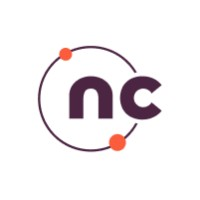

About Me
Software Engineer and Data Science graduate from the University of Maryland with a passion for building scalable, reliable systems. Most recently at AWS, I shipped cloud-native services and AI-powered developer tools that improved team productivity.
I specialize in backend systems, distributed applications, and leveraging AI to solve practical problems. I care about writing software that is clean, efficient, and built to last and I’m always exploring new technologies to sharpen my craft. Outside of work, I enjoy tackling challenging coding problems and building personal projects.
Professional Experience
Software Development Engineer
May 2025 - August 2025Amazon Web Services - Bedrock (Claude Infra)
Seattle, WA

Software Engineer
September 2021 - January 2024NCompass TechStudios
Chennai, India
Academic Journey

Master of Science in Data Science
August 2024 - May 2026University of Maryland, College Park
College Park, MD
GPA: 3.8/4.0
- Research focus: Distributed Systems, AI Infrastructure, NLP
Bachelor of Engineering in Computer Science
August 2017 - May 2021Madras Institute of Technology, Anna University
Chennai, India
- Research in UAV collision avoidance and contact tracing systems
- Teaching Assistant for Data Structures and Algorithms I & II
Research Experience
Multi-Tenant API Gateway with Distributed Rate Limiting
Personal Project
- Designed a Java-based multi-tenant API gateway with per-tenant rate limiting using a Redis sliding-window algorithm, sustaining 12,000+ requests/min in concurrency tests.
- Integrated Resilience4j circuit breakers to isolate downstream failures, reducing recovery time from 45s to 10s in chaos testing.
Semantic Cache & Query Optimization Engine
Personal Project
- Built a semantic caching layer for LLM APIs (pgvector + Redis) that deduplicates similar prompts before API calls, reducing redundant model invocations by 68%.
- Implemented query rewriting and observability with OpenTelemetry and Prometheus, enabling cache decisioning in 15ms during benchmarking.
AtmoSense-Seq-Forecast
University of Maryland, College Park
- Evaluated a Transformer-based air-quality forecasting model over multi-station pollutant time-series data, comparing 48-hour predictions against a persistence baseline.
- Built evaluation scripts and visualizations for MAE/RMSE by horizon, forecast trajectories, and pollutant-level error analysis.
Graph-Powered Public Health Analytics
Madras Institute of Technology
- Designed multi-layer graph heuristics that fused Bluetooth, GPS, and transit feeds, improving exposure-detection recall by 22% while holding precision above 90% in city-wide pilots.
- Trained CNN + temporal attention models that segmented mobility routines with 91% F1 accuracy, providing public health teams actionable micro-cluster alerts within 12 minutes of ingestion.
- Formulated an adaptive handset sampling policy that reduced radio wakeups by 38%, extending device battery life by 18% without sacrificing infection notification latency.
Autonomous Multi-UAV Coordination
Madras Institute of Technology
- Authored an O(n) cooperative velocity-obstacle planner that coordinated 40+ UAVs at 30 Hz, maintaining guaranteed separation envelopes even under GPS drift.
- Implemented a ROS/Gazebo swarm test harness with high-fidelity aerodynamic perturbations, cutting field-readiness cycles from six weeks to two by simulating 1,200 sorties per night.
- Encoded airspace safety contracts with temporal logic, eliminating boundary violations across 500+ autonomous missions and satisfying DGCA flight certification checks.
Technical Skills
Languages
Backend
Databases & Data
Cloud & DevOps
AI / ML & GenAI
Frameworks & Tools
Teaching Experience
Teaching Assistant - Data Structures and Algorithms I & II
Madras Institute of Technology, Anna University
Led programming labs and tutorials for undergraduate students, covering fundamental algorithms and data structures.